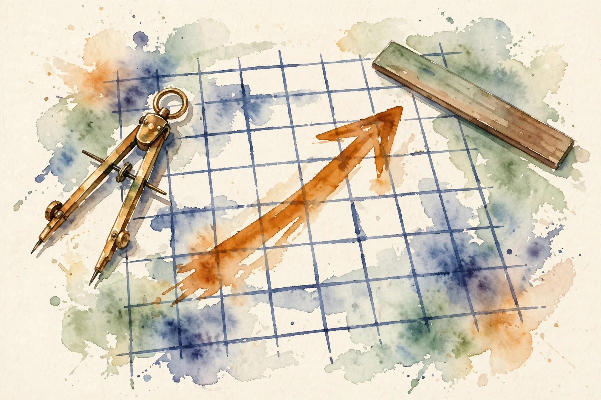

Narrated from the lesson document · no lecture transcript exists
Before any model can learn, every object needs a name, a unit, and a shape. This companion walks the full arc of Unit 01: sets and functions, notation, units, sums, logs, vectors, axes, small honest code, plots that do not lie, assertions, float precision, and reproducibility.
From the lesson The idea, and every number beside it, comes from the cited section of the lesson file lessons/u01/lesson-01-mathematical-language.md. The phrasing is the companion's.
Illustration Invented by the companion: an analogy, a toy with made-up values, or a what-if. Never lesson content.
companion Companion voice: the idea above the tag is from the lesson. The generalization below it is the companion's.
Provenance: the lesson is locally authored prerequisite bridge content. It does not reproduce an instructor lecture, and it carries no transcript. The source mapping states that attribution for the leaf concepts awaits review. All claim classes are lesson-local.

From the lessonC01
Four houses have sizes 1, 2, 3, and 4, in thousand square feet. A rule doubles the size and adds 3: f(x) = 2x + 3. The domain D = {1, 2, 3, 4} holds the allowed inputs. The outputs {5, 7, 9, 11} form the image. The count |D| = 4 states how many items sit in the domain.
A set is a bag of distinct items, and order does not matter. A function is a machine with one input slot and one output chute. Each item that enters leaves as exactly one value. That last sentence is the whole contract.
From the lessonC01
The contract earns its keep when data breaks it. Suppose a rule claims g(2) = 7 and also g(2) = 8. Then g is not a function. A training set with two different prices for the same size hands the model two targets for one input, and no squared-error update can satisfy both at once. The definition exists to rule that case out.
From the lessonC02
Notation is compressed language. Each symbol carries a contract: what it means, what it takes, what it returns. Learn the contract once, then read fast forever. The full symbol registry lives in the lesson file notation_and_shapes.md.
From the lessonC02
The computed example expands the sum contract on the C01 image set: the sum from i = 1 to 4 of y_i equals 5 + 7 + 9 + 11 = 32. The check runs 5 + 7 = 12, 12 + 9 = 21, 21 + 11 = 32. Notation costs nothing to run. It costs confusion when skipped.
From the lessonC02, C04 Sigma expander: the lesson's sum contract, running on your n.
Type an n. The widget writes the expansion 1 + 2 + ... + n and the total.
From the lessonC03
A unit is a tag on a number: meters, dollars, seconds. Only quantities with the same unit may add. The unit of a product is the product of the units. Six houses carry sizes in square feet and prices in thousand dollars.
From the lessonC03
The computed example takes the price difference of 65 thousand dollars over a size difference of 150 square feet. The ratio is 0.4333 thousand dollars per square foot. Multiply back: 0.4333 times 150 equals 65.0 thousand dollars. The round trip closes, so the unit arithmetic is consistent.
From the lessonC03
The rule is one tag per term. Before: f(x) = 2x + 3 with x = 4 gives f = 11, unit unknown. After: x = 4 meters gives f = 11 meters, and the 3 is 3 meters. Unit checks cost a few seconds of thought and catch whole classes of wrong formulas.
From the lessonC04
Machine learning aggregates lists constantly: total loss over examples, total count of tokens, product of probabilities. Two operations do most of this work. Add [2, 5, 7] by hand: 2 + 5 = 7, 7 + 7 = 14. The product runs 2, then 10, then 70.
From the lessonC04
The computed example takes base-10 logs of the factors of 70: log10(2) + log10(5) + log10(7) = 0.30103 + 0.69897 + 0.84510 = 1.84510, and log10(70) = 1.84510. The sum of the logs equals the log of the product. This identity is the bridge to C05, and it is exact on these numbers.
From the lessonC04
The failure case warns about the product of many large numbers: it overflows the float range and becomes infinity. The product of an empty list is 1 by convention, and the sum of an empty list is 0. Code that starts a product accumulator at 0 always returns 0.
From the lessonC05
A model assigns probability 0.1 to each of 400 independent events. The joint probability is 0.1 to the 400th power. Computed directly, the product is 0.0: the float underflows to zero. The true value is positive but far below the smallest representable float.
A logarithm counts orders of smallness. log10(0.1) = -1, so each factor contributes -1, and 400 factors contribute -400. An exponent undoes a log. The rule log_b(a times c) = log_b(a) + log_b(c) holds because logs count exponents, and exponents add when bases multiply. The lesson verifies it: log10(200) = 2.3010299956639813, and log10(2) + log10(100) = 2.3010299956639813. Same number, two paths.
From the lessonC05
Stay in log space. The log of each factor is log(0.1) = -2.302585092994046. Over 400 factors the total is 400 times -2.302585092994046 = -921.0340371976182. That sum is finite, and it is exact enough to compare two models. Exponentiating back gives 0.0 again. The lesson is: do not exponentiate back. Compare in log space.
From the lessonC05
The small case keeps both paths honest. Three coin flips at probability 0.5: the product is 0.5 times 0.5 times 0.5 = 0.125. In log space, 3 times log(0.5) = -2.0794415416798357, and exp of that value is 0.125. Both paths agree here because 0.125 is representable.
From the lessonC05
Why ML lives in log space: likelihoods multiply one factor per data point, datasets hold thousands of points, the log-likelihood is a sum, its gradient is a sum of per-example terms, and the numbers stay finite. This one move underlies MLE, cross-entropy, and every probabilistic loss in U04.
From the lessonC05 Log-space calculator: enter a per-event probability and a count. The widget runs the lesson's two paths.
Probability p:
Count k:
| Path | Computation | Result |
|---|---|---|
| Direct product | 0.1 multiplied 400 times | 0.0 (underflow) |
| Log-space sum | 400 × log(0.1) | -921.0340371976182 (finite) |
| Exp of the sum | exp(-921.0340371976182) | 0.0 (underflow again) |
From the lessonC06
A house is not one number. It has size, rooms, age. A vector packs the list [size, rooms, age] into one object that formulas can move as a unit. A vector is an arrow: it has a direction and a length. The list [3, 4] points 3 right and 4 up. Its length comes from Pythagoras: 3 squared plus 4 squared equals 25, and the square root of 25 is 5.0.
From the lessonC06
With w = [2, -1], the arithmetic runs in three steps. v + w = [5, 3]. 3v = [9, 12]. The dot product v dot w = 3 times 2 plus 4 times -1 = 2. The norm of 3v is the square root of 225, which is 15, and 15 equals 3 times the norm of v. A scaled vector keeps its direction, and its length scales by the same factor.
From the lessonC06
The failure case: v + u with v of length 2 and u of length 3 has no meaning. Code must raise a shape error. In NumPy, mismatched shapes can broadcast silently instead of erroring, which is worse. The lesson demands that [3, 4] + [1, 2, 3] fail loudly and never guess.
From the lessonC07
A table of 2 houses by 3 features: M = [[0, 1, 2], [3, 4, 5]]. Axis 0 runs down the rows. Axis 1 runs across the columns. Reducing along an axis deletes that axis from the shape.
From the lessonC07
Sum along axis 0: the 2 rows collapse into 1 row of 3 column totals, [0+3, 1+4, 2+5] = [3, 5, 7], and the shape moves from (2, 3) to (3,). Sum along axis 1: the 3 columns collapse into 1 column of 2 row totals, [0+1+2, 3+4+5] = [3, 12], and the shape moves from (2, 3) to (2,). The check: 3 + 5 + 7 = 15 and 3 + 12 = 15. Both paths give the same grand total, so the axis arithmetic is consistent.
From the lessonC07
The silent failure: taking the mean over axis 0 when you meant axis 1 averages across the batch instead of across features, and every downstream number is wrong with no error raised. With M above, mean along axis 0 is [1.5, 2.5, 3.5] (column means), while mean along axis 1 is [1.0, 4.0] (row means). Different answers, no warning.
From the lessonC07 Axis reducer: pick an axis on the lesson's table M = [[0, 1, 2], [3, 4, 5]].
The widget runs the lesson's reduction and shows the resulting shape.
From the lessonC08
Every formula in this course becomes code. The discipline: write the smallest version, feed it numbers with known answers, and assert the answers. The toy computes a vector norm from zero, with no library.
From the lessonC08
It breaks with numbers. Delete the square-root line and return the total instead. The test then compares 25.0 to 5.0 and fails. The assertion names the exact wrong value, 25.0, so the fix is obvious.
From the lessonC08
The hinge question: what does the test not prove? It does not prove the function works for length-1000 vectors, for negative items, or for non-list inputs. Tests prove the tested cases, nothing more. Status: executed 2026-10-06, all asserts pass.
import math
def vector_norm(xs):
total = 0.0
for t in xs:
total = total + t * t
return math.sqrt(total)
assert vector_norm([3.0, 4.0]) == 5.0
assert vector_norm([0.0, 0.0]) == 0.0
assert 1e-12 > abs(vector_norm([1.0, 1.0, 1.0]) - math.sqrt(3.0))| Input | Output | Reading |
|---|---|---|
| [3, 4] | 5.0 | 3-4-5 triangle |
| [0, 0] | 0.0 | zero vector |
| [1, 1, 1] | 1.732050807… | square root of 3 |
From the lessonC09
A plot is a claim. A y-axis that starts at 300 makes a rise from 320 to 385 look like a doubling. An axis that starts at 0 shows the true proportion. The data: six houses, sizes in square feet and prices in thousand dollars: (800, 320), (950, 385), (1100, 445), (1300, 520), (1500, 610), (1800, 740).
From the lessonC09
The lesson's exact plotting code sets both axes to start at 0: x from 0 to 2000, y from 0 to 800, with labeled axes size (sq ft) and price (thousand dollars). The rendered figure was verified 2026-10-06. The discipline extends to every figure in the course: one claim per figure, axes that state the scale honestly.
Illustration Imagine the same six dots with the y-axis starting at 300. The rise from 320 to 385 would stretch across most of the panel and read like a doubling. Same data, different claim. The lesson's rule kills that trick: start at 0 unless you state why not.
From the lessonC10
An assertion states what must be true at a point in the code. If the statement is false, the program stops and names the line. The bug cannot travel downstream and corrupt ten more numbers first. An assertion is a guard at a door: every value that passes has shown its papers.
From the lessonC10
The concrete problem: a classifier outputs probabilities for 3 classes, p = [0.2, 0.3, 0.5]. Probabilities must be non-negative and sum to 1. The computed check: sum([0.2, 0.3, 0.5]) = 1.0 exactly in float64 here, so the tolerance 1e-9 passes. Feed [0.2, 0.3, 0.4]: the sum is 0.9, the message reads that probabilities sum to 0.9, not 1, and the failure names the value.
From the lessonC10
The failure cases cut both ways. A tolerance of 0.5 passes sums from 0.5 to 1.5 and guards nothing. An assertion inside a tight loop over a million items adds real time. And assert with tol = 1e-16 fails on legitimate float noise and trains the team to delete assertions. Selection boundary: assertions for invariants that must hold every run, tests for behavior across runs.
| Input p | Sum | Verdict |
|---|---|---|
| [0.2, 0.3, 0.5] | 1.0 | passes |
| [0.2, 0.3, 0.4] | 0.9 | fails: sum is 0.9, not 1 |
| [0.5, 0.5, -0.1] | 0.9 | fails: negative probability |
From the lessonC11
A float32 holds about 7 decimal digits. A float64 holds about 16. The number 0.1 has no exact binary form, so each format stores the nearest representable neighbor. A float is scientific notation with a fixed digit budget.
From the lessonC11
The computed example: 0.1 added ten times gives 1.0000001192092896 in float32 and 1.0 in float64. The float64 sum lands exactly on 1.0 here by rounding luck. The float32 sum misses by about 1.2e-7. Both are approximations. Only the size of the error differs. Also (1/3) times 3 is 1.0 in float64 and 1.0000000298023224 in float32.
From the lessonC11
Catastrophic cancellation defeats both formats: (1e16 + 1) - 1e16. The true answer is 1.0. In float64 the sum 1e16 + 1 rounds back to 1e16, so the computed answer is 0.0. Sixteen digits of budget cannot hold a 1 seventeen digits down from the leading digit. The correctness rule: never compare floats with ==. Compare with a tolerance, abs(a - b) less than 1e-9 for float64-scale work.
From the lessonC11 Float drift toy: add 0.1 n times in float64 and watch the error against the exact n / 10.
The lesson's n = 10 case lands on 1.0 by rounding luck. Larger n shows the drift.
| Computation | float32 | float64 |
|---|---|---|
| ten times 0.1 | 1.0000001192092896 | 1.0 |
| (1/3) × 3 | 1.0000000298023224 | 1.0 |
| (1e16 + 1) − 1e16 | 0.0 | 0.0 |
From the lessonC12
A random generator is deterministic: a seed fixes the whole sequence. Same seed, same numbers, every run, on every machine. Loading slot 7 replays the exact same game.
From the lessonC12
The computed example uses numpy 1.26.4: np.random.default_rng(7) then rng.random(4) prints [0.62509547, 0.8972138, 0.77568569, 0.22520719]. A fresh generator with the same seed prints the identical four numbers. Without a seed, each run prints different numbers.
From the lessonC12
The discipline: seed once at the start of the program, log the seed with the results, never seed inside a loop. Seeding inside the training loop resets the generator each iteration, so every batch draws the first random numbers and the data order never varies. The cost of seeding is one line. The cost of not seeding is every debugging session that cannot replay a failure.
| Setup | First four outputs |
|---|---|
| default_rng(7), run 1 | 0.62509547, 0.8972138, 0.77568569, 0.22520719 |
| default_rng(7), run 2 | 0.62509547, 0.8972138, 0.77568569, 0.22520719 |
| default_rng() unseeded | varies per run |
From the lessonChapter plate, figure f13
The lesson closes with a plate: left, the cost without the rule. Center, the stored object. Right, the cost with the rule. The tradeoff in one line. Bare numbers, no units, no shapes versus every quantity named, tagged, and checked.
Bare numbers, no units, no shapes.
A wrong formula runs silently. 0.1 to the 400th power silently becomes 0.0. A mean over the wrong axis corrupts every downstream number with no error.
Every quantity named, tagged, checked.
A unit check kills the wrong formula in seconds. Log space keeps -921.0340371976182 finite. The assertion names the bad value at the line.
Every lesson on this page, in order. Tap one to return to its chapter.